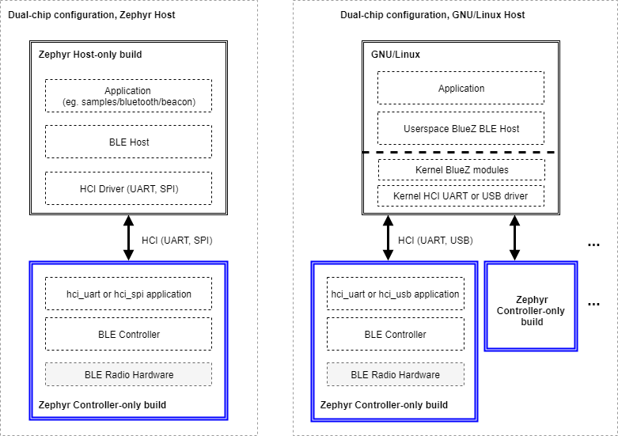

协议栈架构
概述
本页介绍 Zephyr Bluetooth 协议栈的软件架构。
备注
Zephyr 主要支持 Bluetooth Low Energy（LE），即 Bluetooth 规范的低功耗版本。Zephyr 对 BR/EDR 主机的部分功能也提供有限支持。
Bluetooth LE 分层
一个完整的 Bluetooth Low Energy 协议栈由 3 个主要层共同构成：
主机（Host）：该层位于应用程序正下方，由多个（非实时的）网络和传输协议组成，使应用程序能够以标准且可互操作的方式与对端设备通信。
控制器（Controller）：控制器实现链路层（LE LL），这是一种底层实时协议，它与无线电硬件配合，提供符合标准、可互操作的空中通信。链路层负责调度数据包的接收和发送，保证数据的送达，并处理所有链路层控制过程。
无线电硬件（Radio Hardware）：硬件实现所需的模拟和数字基带功能模块，使链路层固件能够在 2.4GHz 频段收发数据。
主机控制器接口（Host Controller Interface）
Bluetooth Specification 规定了主机与控制器通信时必须使用的格式，称为主机控制器接口（HCI）协议。HCI 可以通过多种不同的物理传输方式实现，例如 UART、SPI 或 USB。该协议定义了主机可以发送给控制器的命令、主机可预期收到的返回事件，以及需要通过空中传输的用户数据和协议数据的格式。HCI 确保不同的主机和控制器实现能够以标准方式通信，从而可以组合来自不同厂商的主机和控制器。
配置
协议的三个独立分层和标准化接口使得主机和控制器可以在不同的平台上实现。常用的配置有以下两种：
单芯片配置：在这种配置中，一个微控制器实现全部三个层以及应用程序本身，也可称为片上系统（SoC）实现。此时 Bluetooth 主机和 Bluetooth 控制器直接通过函数调用和 RAM 中的队列通信。Bluetooth 规范没有规定在单芯片配置中如何实现 HCI，因此两者之间 HCI 命令、事件和数据的传递方式可以由具体实现决定。由于所有内容都运行在单个 IC 上，这种配置非常适合要求占用空间小、功耗尽可能低的应用和设计。
双芯片配置：这种配置使用两个独立的 IC，一个运行应用程序和主机，另一个运行控制器并带有无线电硬件，有时也称为连接芯片（connectivity-chip）配置。当使用 Zephyr OS 作为控制器时，这种配置允许搭配更多种类的主机。由于 HCI 确保了主机和控制器实现之间的互操作性（当然也包括 Zephyr 自己的 Bluetooth 主机和控制器），Zephyr 控制器的用户可以选择在任何平台上运行任意主机。例如，主机可以是运行在任何支持 Linux 的处理器上的 Linux Bluetooth 主机协议栈（BlueZ）。主机处理器当然也可以运行 Zephyr 及 Zephyr OS Bluetooth 主机。反过来，也支持将运行 Zephyr 主机的 IC 与不运行 Zephyr 的外部控制器组合使用。
构建类型
作为 RTOS，Zephyr 软件栈具有高度可配置性。特别是 Bluetooth 子系统，可以在构建过程中以多种方式配置，只包含所需的功能和层，以减少 RAM 和 ROM 占用以及功耗。以下简要列出了可以从 Zephyr 项目代码库生成的几种启用 Bluetooth 的构建：
仅控制器构建：作为 Bluetooth 控制器构建时，Zephyr 包含链路层和一个特殊的应用程序。根据为 HCI 选择的物理传输方式，该应用程序有所不同：
该应用程序充当 UART、SPI 或 USB 外设与控制器子系统之间的桥梁，监听 HCI 命令、发送应用数据，并以事件和接收到的数据进行响应。这种类型的构建会设置以下 Kconfig 选项值：
CONFIG_BT=y
控制器本身也需要启用，通常是确保相应的设备树节点处于启用状态。
仅主机构建：Zephyr OS 主机构建包含应用程序和 Bluetooth 主机，以及一个用于连接外部控制器芯片的 HCI 驱动（UART 或 SPI）。这种类型的构建会设置以下 Kconfig 选项值：
CONFIG_BT=y
此外，如果平台还支持本地控制器，则需要将其禁用，通常是禁用相应的设备树节点。同时还要启用其他某个 HCI 驱动的设备树节点，并确保
zephyr,bt-hci设备树 chosen 属性指向该节点。除用于仅控制器构建的示例外，
samples/bluetooth下的所有示例都可以按仅主机方式构建组合构建：包含应用程序、主机和控制器，仅用于单芯片（SoC）配置。这种类型的构建会设置以下 Kconfig 选项值：
CONFIG_BT=y
控制器本身也需要启用，通常是确保相应的设备树节点处于启用状态。
除用于仅控制器构建的示例外，
samples/bluetooth下的所有示例都可以按组合方式构建
下图展示了使用 Zephyr 组合构建（即在烧录到芯片上的同一个固件镜像中同时包含 Bluetooth 主机和控制器）时的 SoC 或单芯片配置：

使用连接芯片或双芯片配置时，可以有多种主机和控制器组合，其中一些如下图所示：

使用 Zephyr 主机时（图左侧），必须以不同配置构建两个 Zephyr OS 实例，生成两个独立的镜像，分别烧录到两个芯片中。主机构建镜像包含应用程序、Bluetooth 主机和所选的 HCI 驱动（UART 或 SPI），而控制器构建则运行 HCI UART 或 HCI SPI 应用程序，为 Bluetooth 控制器提供接口。
如图右侧所示，这种配置并不限于使用 Zephyr OS 主机。实际上可以使用众多现有 GNU/Linux 发行版中的任意一个（其中大多数都包含 Linux 自带的 Bluetooth 主机 BlueZ），通过 UART 或 USB 将其连接到一个或多个 Zephyr OS 控制器构建实例。对于需要多个 Bluetooth 无线电同时工作、但共享同一个主机协议栈的应用程序，BlueZ 作为主机支持同时连接多个控制器。
源码树结构
协议栈在源码树中的划分如下：
- subsys/bluetooth/host
主机协议栈。HCI 命令和事件处理以及连接跟踪都在这里进行。L2CAP、ATT 和 SMP 等核心协议的实现也位于此处。
- subsys/bluetooth/controller
Bluetooth LE 控制器 的实现。实现了 HCI 的控制器端、链路层以及对无线电收发器的访问。
- include/zephyr/bluetooth/
公共 API 头文件。应用程序需要包含这些头文件才能使用 Bluetooth 功能。
- drivers/bluetooth/
HCI 传输驱动。每种 HCI 传输都需要自己的驱动。例如，两种常见的 UART 传输协议（3 线和 5 线）各有自己的驱动。
- samples/bluetooth/
Sample Bluetooth code。这是开始开发 Bluetooth 应用程序时的良好参考。
- tests/bluetooth/
测试应用程序。这些应用程序用于验证 Bluetooth 协议栈的功能，但不一定是示例代码的最佳来源（请改为参考 samples/bluetooth）。
- doc/services/connectivity/bluetooth/
额外的文档，例如 PICS 文档。